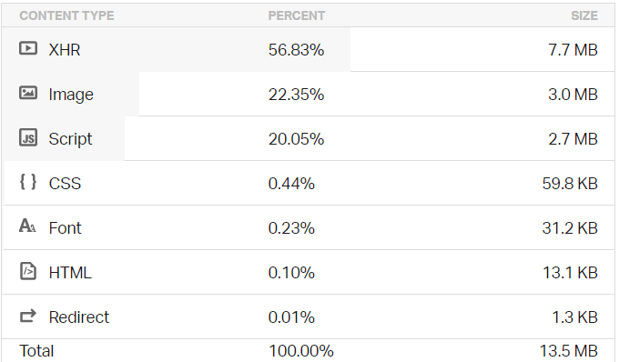
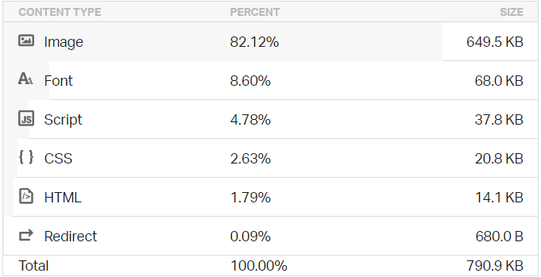

Exemples de site low-tech
Nous avons vu dans le chapitre précédent le développement et
l'hébergement d'un site low-tech, et nous avons vu dans le chapitre 4
les différents types de site web. Donc dans ce chapitre nous allons
donner quelques exemples de sites (low-tech ou non), et les comparer.
Outil : Pingdom
Afin de pouvoir comparer les performances des différents sites,
il est nécessaire d'utiliser des outils
qui vont nous fournir des informations sur les pages web à comparer.
Nous aurons ainsi des mesures issues du même test qui nous servirons de base de comparaisons.
Il existe de nombreux tests accessibles gratuitement en ligne comme on s'en aperçois
en recherchant "website speed test" sur n'im^porte quel moteur de recherche.
Même Google fournit un test : PageSpeed Insights - Google Developers.
Ici, avant de présenter les exemples des sites, nous allons donc
présenter un de ces outils, Pingdom, un site web qui offre une surveillance
fiable et claire de la disponibilité et des performances de site web.
Nous allons utiliser ce site web pour comparer les sites normales et les sites low-tech.
Tout d'abord ce site évalue le site que nous avons donné, il nous
renvoie une note globale sur la performance, la taille de la page, le
temps de chargement. Ensuite il nous offre des notes (allant de 0 à 100
et de F à A) sur des critères permettant d'améliorer la performance. Les
critères sont :
-
Ajouter des en-têtes Expires (Les pages Web
deviennent de plus en plus complexes avec plus de scripts, de feuilles
de style, d'images et de Flash dessus. Une première visite sur une
page peut nécessiter plusieurs requêtes HTTP pour charger tous les
composants. En utilisant les en-têtes Expires, ces composants peuvent
être mis en cache, ce qui évite les requêtes HTTP inutiles sur les
pages vues suivantes. Les en-têtes Expires sont le plus souvent
associés à des images, mais ils peuvent et doivent être utilisés sur
tous les composants de la page, y compris les scripts, les feuilles de
style et Flash.)
-
Compresser les composants avec gzip (La compression
réduit les temps de réponse en réduisant la taille de la réponse HTTP.
Gzip est la méthode de compression la plus populaire et la plus
efficace actuellement disponible et réduit généralement la taille de
la réponse d'environ 70%. Environ 90% du trafic Internet actuel passe
par des navigateurs qui prétendent prendre en charge gzip.)
-
Faire moins de requêtes HTTP (La diminution du nombre
de composants sur une page réduit le nombre de requêtes HTTP requises
pour afficher la page, ce qui accélère le chargement des pages. Voici
quelques moyens de réduire le nombre de composants: combiner des
fichiers, combiner plusieurs scripts en un seul script, combiner
plusieurs fichiers CSS dans une seule feuille de style et utiliser des
sprites CSS et des images maps.)
-
Utiliser des domaines sans cookies (Lorsque le
navigateur demande une image statique et envoie des cookies avec la
demande, le serveur ignore les cookies. Ces cookies sont du trafic
réseau inutile. Pour contourner ce problème, assurez-vous que les
composants statiques sont demandés avec des demandes sans cookie en
créant un sous-domaine et en les y hébergeant.)
-
Réduire les recherches DNS (Le système de noms de
domaine (DNS) mappe les noms d'hôte aux adresses IP, tout comme les
répertoires téléphoniques associent les noms des personnes à leurs
numéros de téléphone. Lorsque vous tapez l'URL www.yahoo.com dans le
navigateur, le navigateur contacte un résolveur DNS qui renvoie
l'adresse IP du serveur. Le DNS a un coût; il lui faut généralement de
20 à 120 millisecondes pour rechercher l'adresse IP d'un nom d'hôte.
Le navigateur ne peut rien télécharger de l'hôte tant que la recherche
n'est pas terminée.)
-
Éviter les redirections d'URL (Les redirections d'URL
sont effectuées à l'aide des codes d'état HTTP 301 et 302. Elles
indiquent au navigateur d'aller vers un autre emplacement. L'insertion
d'une redirection entre l'utilisateur et le document HTML final
retarde tout sur la page car rien sur la page ne peut être rendu et
aucun composant ne peut être téléchargé jusqu'à ce que le document
HTML arrive.)
-
Éviter les src ou href vides (Vous pouvez vous
attendre à ce qu'un navigateur ne fasse rien lorsqu'il rencontre une
image vide src. Cependant, ce n'est pas le cas dans la plupart des
navigateurs. IE fait une demande au répertoire dans lequel se trouve
la page; Safari, Chrome, Firefox 3 et les versions antérieures font
une demande à la page elle-même. Ce comportement pourrait corrompre
les données des utilisateurs, gaspiller les cycles de calcul du
serveur générant une page qui ne sera jamais affichée et, dans le pire
des cas, paralyser vos serveurs en envoyant une grande quantité de
trafic inattendu.)
-
Mettre JavaScript en bas (Les scripts JavaScript
bloquent les téléchargements parallèles; autrement dit, lorsqu'un
script est en cours de téléchargement, le navigateur ne lancera aucun
autre téléchargement. Pour accélérer le chargement de la page,
déplacez les scripts vers le bas de la page s'ils peuvent être
différés.)
-
Réduire le nombre d'éléments DOM (Une page complexe
signifie plus d'octets à télécharger et un accès au DOM plus lent en
JavaScript. Réduisez le nombre d'éléments DOM sur la page pour
améliorer les performances.)
- etc.
Il nous indique la taille de chaque type de contenu comme les vidéos,
les images, les scripts, le code HTML, le code CSS, le font, les liens
de redirections, etc.
Les sites vitrines
Comme nous avons vu au chapitre 4, un site vitrine est alors un site web
qui expose ce que proposent différents partis comme des PME, des artisans
ou des entreprises de services.
Les sites vitrine sont intéressants, car ayant pour rôle de représenter le site et l'organisme sous-jacent
ces pages donnent un bon aperçu du site dans son ensemble.
Aussi celles-ci ont pour mission d'être attractif afin de donné une bonne image de la compagnie
tout en étant assez rapide au chargement pour ne pas repousser ne partit des visiteurs.
Ici prenons un exemple pour un site
normal, le site vitrine de BenjaminCode
qui montre ses produit qui sont ses vidéos YouTube ainsi que ses
compétences dans le web, nous allons le comparer avec un site vitrine
low-tech, le site de The Green Emporium, une entreprise qui offre les meilleures alternatives aux produits du
quotidien tout en réduisant le plus possible l'impact écologique sur la
planète et les animaux.

le site vitrine de
BenjaminCode
Niveu de performance : 74 C
Taille de la page : 13.5 MB
Temps de chargement : 786 ms



le site de The
Green Emporium
Niveu de performance : 84 C
Taille de la page : 799.8 KB
Temps de chargement : 286 ms


Nous observons qu'en effet le site vitrine de The Green Emporium est
plus performant que le site de benjaminCode avec une différence de 10
points selon l'outil Pingdom, il est aussi environ 17 fois plus petit
que le site de benjaminCode, c'est un cas exceptionnel car le site de
benjaminCode contient enormément de vidéos. Et le temps de chargement du
site de benjaminCode est 2.5 fois plus lent que l'autre site.
Ensuite, pour les différents critères de performances, nous voyons que
le site de The Green Emporium a des meilleures notes que le site de
benjaminCode, notamment dans les critères comme "Compresser les
composants avec gzip". Cependant il reste toujours des points à
améliorer pour avoir une meilleure performance comme le critère "Ajouter
des en-têtes Expires".
Enfin, en observant les différents contenus, nous pouvons constater que
les contenus les plus lourds sont bien les vidéos (XHR), les images et
les scripts que nous avons parlé dans les chapitre précedent, ces trois
types de contenus répresente 90% d'un site web.
Sources
Pour aller plus loin...